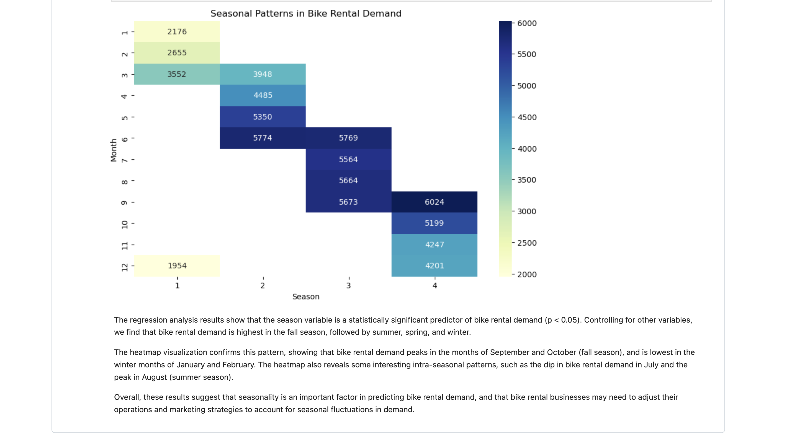

DATA
CLEANING
IN SQL

The main objective of this project is to improve the accessibility and utility of housing data that is in its raw form. By leveraging the capabilities of SQL Server, I aim to transform this data into a more structured and organized format that is easier to work with for analysis. This process involved data cleaning, aggregation, and other necessary transformations to ensure that the data is reliable and accurate.
DATA
EXPLORATION
IN SQL

This project focuses on analyzing global COVID-19 data using SQL Server. The aim is to gain a deeper understanding of the spread and impact of the virus across different countries and regions. By leveraging the capabilities of SQL Server, I explored and manipulated the data to extract meaningful insights and identify trends.
LUNG CANCER DATA ANALYSIS & INSIGHTS
USING PYTHON & SQL
This project revolves around a comprehensive analysis of lung cancer data with a focus on extracting valuable insights to inform decisions. Leveraging the power of Python, Pandas, and SQL, I meticulously cleaned, preprocessed, and scrutinized a sizable dataset of sample/dummy lung cancer cases. Employing statistical techniques and data visualization, I uncovered pivotal correlations and trends within the data.
TABLEAU
project

The purpose of this project is to utilize Tableau to create visualizations that provide insights into Airbnb pricing. By analyzing Airbnb data, I aim to gain a better understanding of the factors that influence pricing, such as location, property type, and time of year. I created an interactive charts and graphs that enable me to explore and analyze the data in a more intuitive and accessible manner. The resulting insights can be used to make more informed decisions when it comes to booking an Airbnb, as well as to inform pricing strategies for Airbnb hosts.
power
bi
project

Using Power BI, I created a dashboard that provides insights into a survey with respondent data. The dashboard includes visualizations that allow the user to easily analyze the data and identify trends and patterns.
excel
project

For this project, I used Microsoft Excel to clean and organize the survey data. This involved removing any duplicate or irrelevant data points, as well as correcting any errors or inconsistencies in the data. Once the data was cleaned and organized, I used Excel's PivotTable functionality to create a dashboard that visualized the key insights from the data.
Analyzing
Seasonal Trends in Bike Rentals and Predicting Future Rentals using Python

This project utilized Python to analyze the impact of seasonality on bike rentals using the Bike Sharing Dataset. The project involved data cleaning, exploration, and visualization to gain insights into the patterns of bike rentals over different seasons. The analysis revealed that bike rentals tend to increase during summer and fall months, and decrease during winter and spring months. The project provided valuable insights into the seasonal trends of bike rentals and can be useful for bike rental businesses to plan their operations accordingly. Additionally, a machine learning model was built to predict the number of bike rentals based on various features such as season, temperature, humidity, windspeed and weather conditions.
BMI
Calculator
with python

In this project, I created a Body Mass Index (BMI) calculator using Python. The program takes user inputs for weight and height, and calculates the BMI. The program also provides a brief interpretation of the BMI result.
Automatic
file sorter
with python

In this project, I created a file sorter using Python